守关者重设计方案（等你确认）
这批改的是第 2、3、4、7、8 关（两个阶段），另外按你选的第三版换上了雷恩。第 1 关不改。第 5 关克洛伊是你已经确认过的女主，立绘、CG 和结局都按她现在的样子做好了，画风也已经是二次元高品质，所以保留不动。名字基本都保留，因为薇丝塔的台词、典籍和结局里互相引用很多；只有巴尔德温换了称号。
现在的状态：立绘、台词、配音、典籍残卷都已在本地做完，还没打进测试包。你确认后我再提交和出包；哪位不满意就告诉我，单独重做。每段配音旁边都有播放器，可以直接试听。
总线：三百年前那一夜，每个守关者都在场
艾瑞（主角前世）替雷恩走进光里的那一夜，是整条天阶的转折点。每位守关者都从自己的位置看见了它，也各自因此停在了原地。玩家每打过一关就拼上一块，到第 8 关拼完整。
| 关 | 守关者 | 那一夜在哪 | 从此守着什么 |
|---|
| 2 | 伊索尔德 | 魔都书库，誊写王名录 | 一行没写完的名字 |
| 3 | 巴尔德温 | 古道尽头，送三人上山 | 一句被凿平的誓言 |
| 4 | 菲奥娜 | 断桥上举着团旗送王 | 一座王走过就断了的桥 |
| 5 | 克洛伊 | 源泉前，手上的戒指 | 被停住的那一刻 |
| 6 | 雷恩 | 被打晕在天阶上 | 一面只剩「瑞」字的旗 |
| 7 | 赛琳娜 | 源泉前宣读律令 | 一个她明知不对、仍放进光里的人 |
| 8 | 阿斯特里昂 | 光的另一头 | 他亲手教出来的那双手 |
第 2 关 · 失落魔都
伊索尔德 · 溺城书记
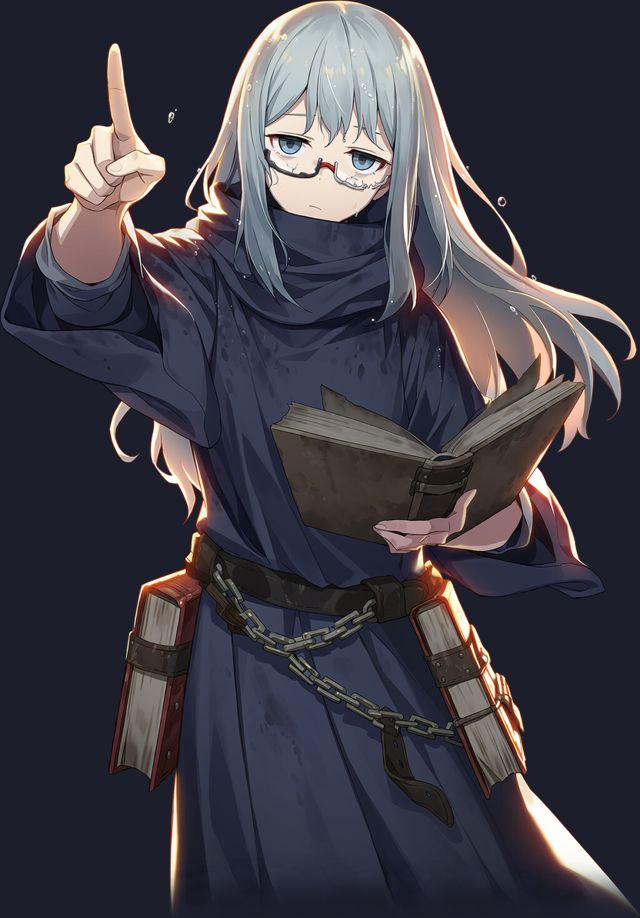
旧版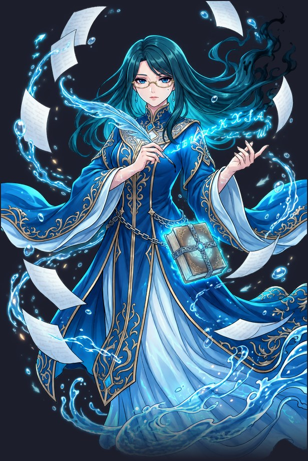
新版
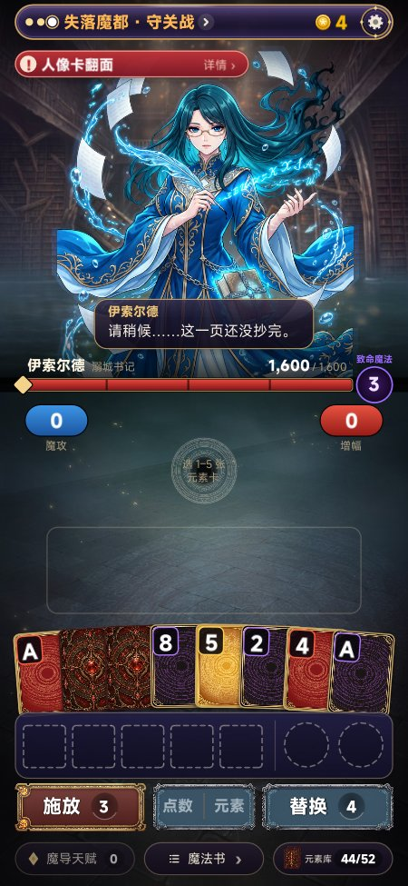
战斗界面实机
- 外形
- 知性美人书记，外表约 26 岁。深青黑长发像在水中漂浮，发梢化成墨；金边眼镜、泪痣；深海蓝学者长袍，下摆如水流散；手执水凝的羽笔，写满名字的纸页在水泡里环绕。
- 为何而战
- 魔都沉下去那一夜她没有逃，用笔把整座湖的水「写」住了。魔都至今只沉到塔尖，是因为她一直没停笔。登天者每往上走一步，水就涨一寸，所以她要拦你。
- 和主角
- 三百年前她替新王誊写王名录。送来的名字是雷恩，走进光里的却是另一个人。她只写下「艾」字的第一笔，城就沉了。那行名字是她故意不写完的：「只要没写完，你就还没沉下去。」
- 技能
- 溺城潮葬（致命魔法），战斗中有纸页环绕、墨字成刃、水位上涨
- 够不够强
- 一个人用一支笔托住一整座湖，托了三百年。
被击败「那一行……我留了三百年。原来是留给你自己来写的。」
第 3 关 · 登天古道
巴尔德温 · 千阶誓卫（原：石誓贤者）
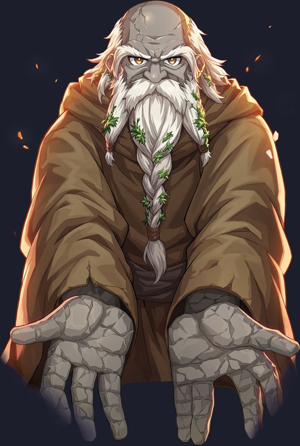
旧版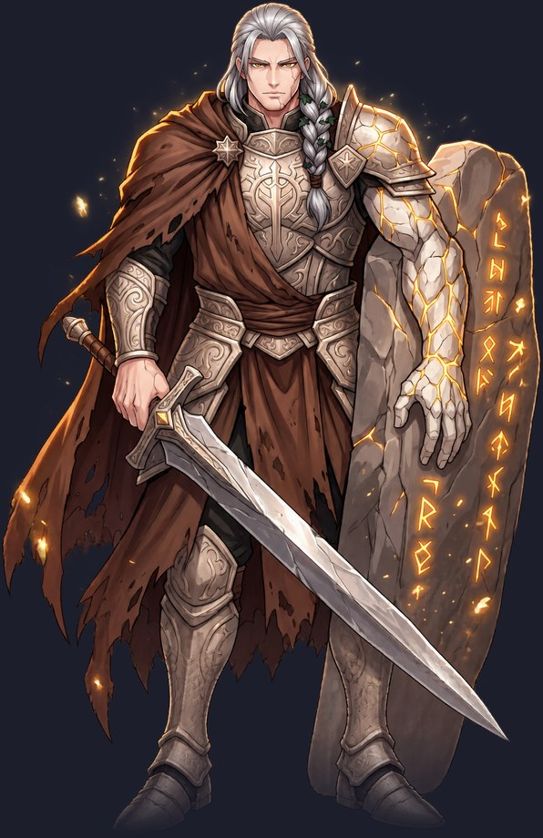
新版
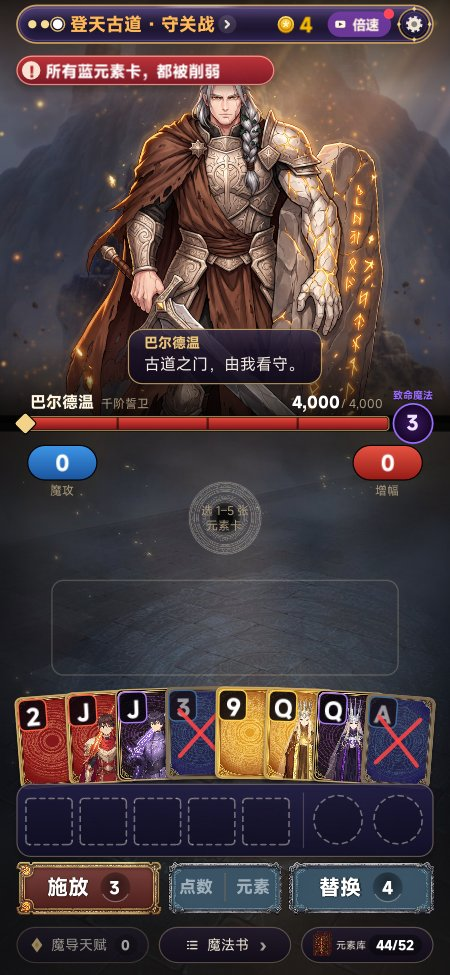
战斗界面实机
- 外形
- 从老人改为强大的石誓骑士。外表停在立誓那年，约 35 岁，是轮廓深、眉眼锋利的成熟美男子。银灰长辫，半身化作带金色符文裂缝的岩石，古朴石铠，手持刻满誓文的巨碑塔盾和半化石巨剑。
- 为何而战
- 古道守誓人的最后一个，立誓「为登天者守门，直到最后一位王走过」。每送一人上山，就有一块皮肉化成石头，同伴们一个个成了台阶。他拦你，是因为他送你上去过很多次，知道你走到最后会变成什么。
- 和主角
- 三百年前他在古道尽头送三个人上山：雷恩、克洛伊，和一个手上全是灼痕的年轻人。那个年轻人问他：「你守了这么久，不想坐下吗？」一千年里只有这个人问过。誓碑最后一行原写「守誓人送王，至死不问」，那一夜之后他把它凿平了，从此开始问每个上山的人「你确定吗」。
- 技能
- 镇石碑（致命魔法），战斗中有誓碑落地、石盾格挡、地面化石
- 够不够强
- 一千年没坐下过一次，古道的每一级台阶都听他的。
被击败「你问过我，想不想坐下。……现在，我可以坐了。」
第 4 关 · 云间断桥
菲奥娜 · 断桥风舞者
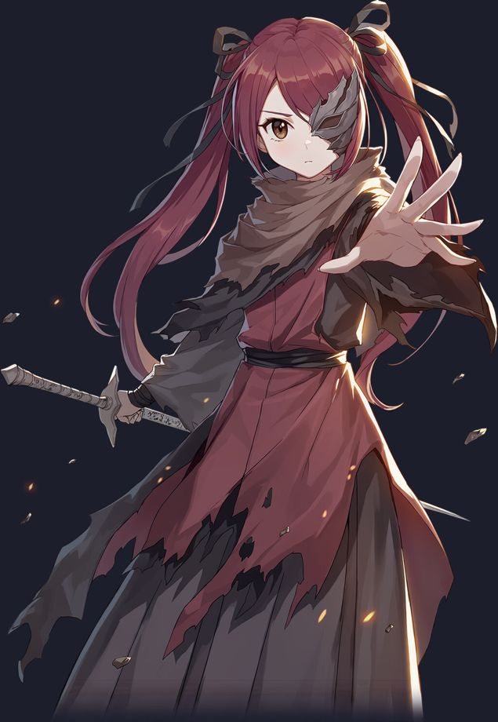
旧版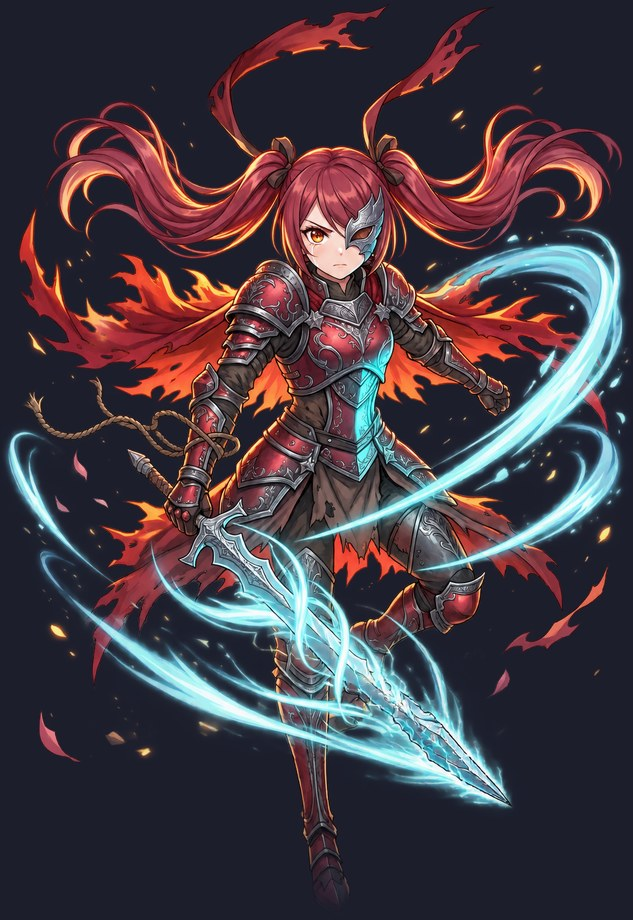
新版
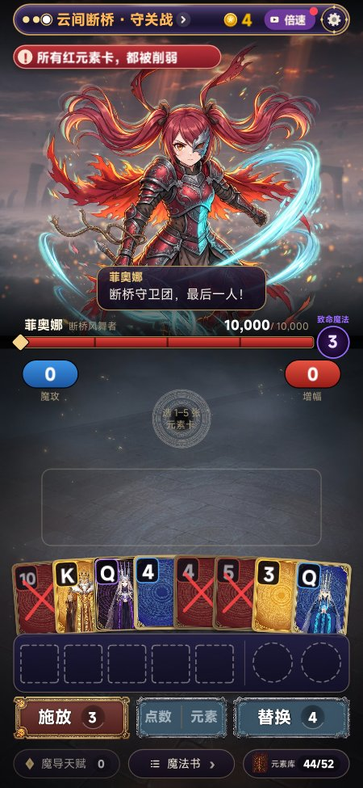
战斗界面实机
- 外形
- 保留红双马尾、团长半面具、断剑三个识别物，颜值和气场全面提高。酒红长马尾在狂风里翻飞，琥珀色眼睛倔强明亮，红黑守卫团轻甲，断剑上缠着青白色风刃，身周旋转着残旗碎屑。
- 为何而战
- 她是断桥守卫团的最后一人。桥断那天，全团跳下去托住了半座城，她挂在钩绳上没能跟上。她守的不是桥，是那一跳。
- 和主角
- 三百年前最后一个走过这座桥的王是艾瑞。他揉了揉刚入团的她的头，说「桥交给你了，小团长」。他走进光里后桥就崩落了，风把她停在那一跳之前，三百年没有长大。她一直以为这句话是团长说的。
- 技能
- 断空风刃（致命魔法），战斗中有风刃回旋、残旗卷屏、钩绳突进
- 够不够强
- 三百年，一个人，站在只剩一半的桥上，连风都替她撑腰。
第 6 关 · 天穹壁垒
雷恩 · 卡斯坦 · 熔冠天骑（按你选的第三版 C 已换上）
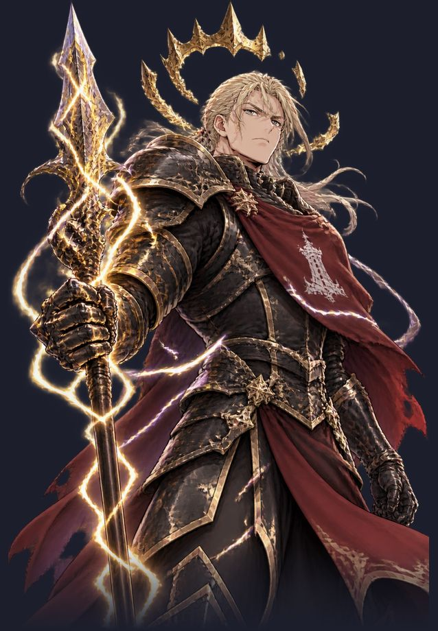
旧版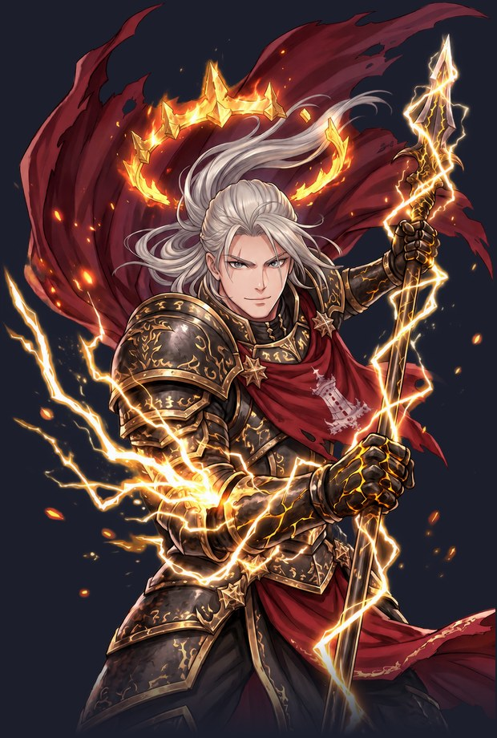
新版
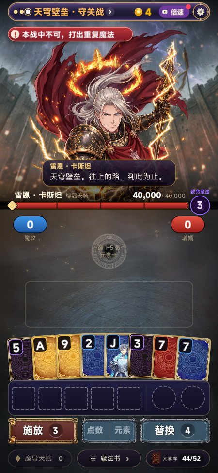
战斗界面实机
- 外形
- 用的是你选的 C 威压版：仰视构图，燃烧的王冠碎片，右臂雷暴，直视玩家。
- 为何而战
- （不变）挡住每一个往上走的人。
- 和主角
- （不变）前世的歃血兄弟。
- 技能
- 雷誓天罚（致命魔法）
- 够不够强
- —
被击败「你这个混蛋……三百年。上去吧，这一次，我在后面替你守着天。」
第 7 关 · 天空王城
赛琳娜 · 律令者
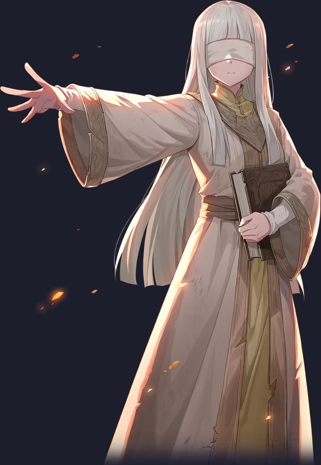
旧版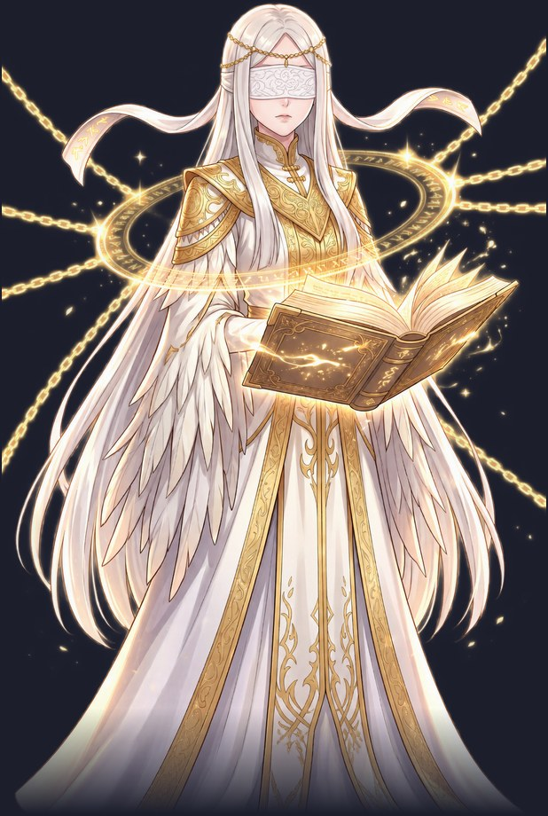
新版
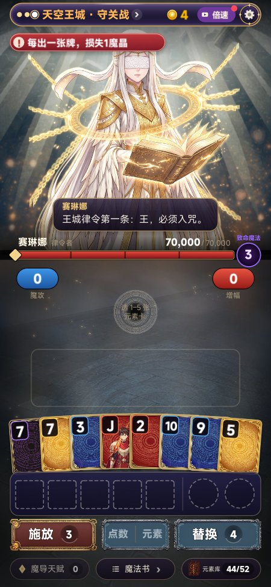
战斗界面实机
- 外形
- 冷艳圣洁的律令官，外表约 27 岁。白金长发及踝，金链额饰，眼上蒙着绣金纹的白丝缎。白金华丽法袍，羽状长袖，身周三圈金色法印环旋转，巨大的律令法典悬在面前，光链向四周伸出。
- 为何而战
- 她把每一位新王送进光里。王城空了，她仍每天对着无人的王座宣读律令，律令第一条是「王，必须入咒」。
- 和主角
- 三百年前那一夜，宣读律令的是她。她看见了：走进来的不是被选中的雷恩。律令写的是「王，必须入咒」，没写「被选中的王」，所以她没有喝止，让他进去了。他回头朝她笑了一下。从那天起她蒙上了眼，在律令最后加了一条：「不看。」
- 技能
- 绝对律令（致命魔法），战斗中有法印盖下、光链锁手、宣判
- 够不够强
- 她念出的条文，世界就照做。一千年来没有一位王违抗过。
被击败 1「那一夜……我看见了，走进去的不是他。」
被击败 2「我还是让你进去了。……现在，我可以看一眼了吗。」
第 8 关 · 原初源泉 · 一阶段
万王之影 · 历代魔法王
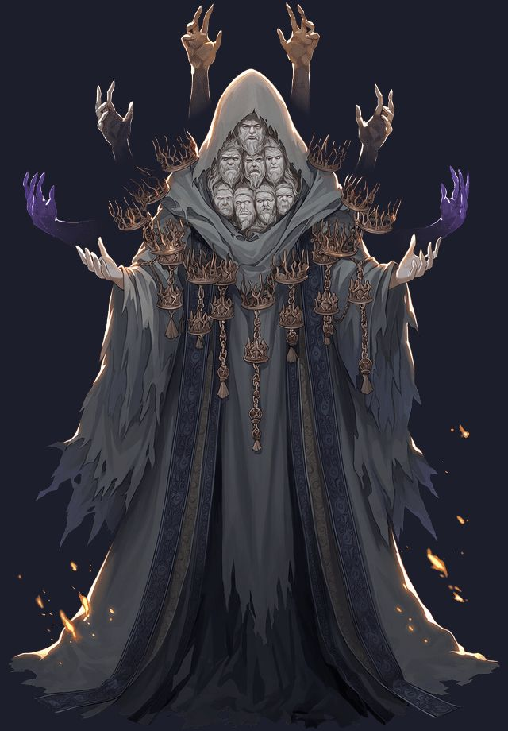
旧版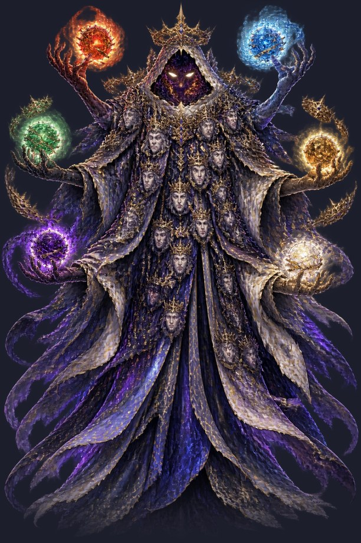
新版
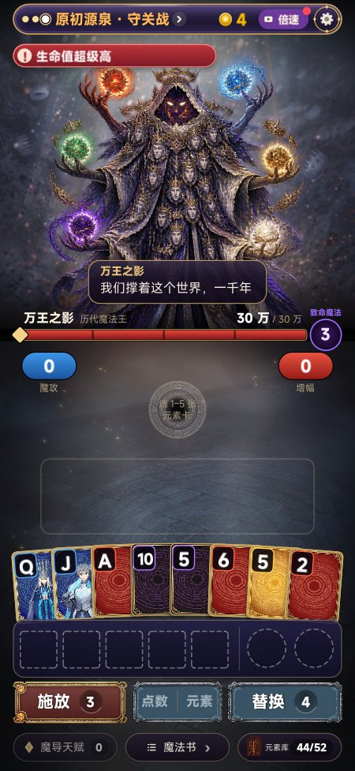
战斗界面实机
- 外形
- 神祇级的巨大王影。星空长袍上挂着上百顶黯金王冠，每顶冠下浮着一张沉睡的王的脸；兜帽深处是星云和一双白金色的眼；六只光影巨手托着四色元素宝珠，王冠碎片像行星环一样环绕。
- 为何而战
- 他们撑着这个世界一千年，已经记不得为什么要撑。他们要你也成为他们，不是出于恶意，而是只知道这一种活法。
- 和主角
- 袍上有一张脸比别的都新：三百年前，它还叫艾瑞。
- 技能
- 终焉之咒（致命魔法），战斗中有万冠环绕、四色宝珠轮番砸落
- 够不够强
- 一千年的王叠在一起。
第 8 关 · 原初源泉 · 二阶段
阿斯特里昂 · 初代魔法王
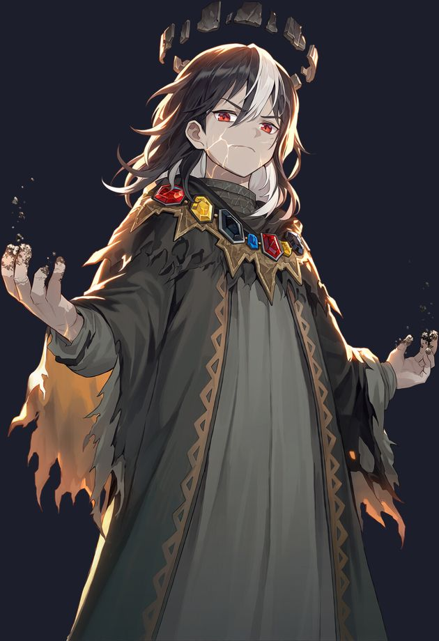
旧版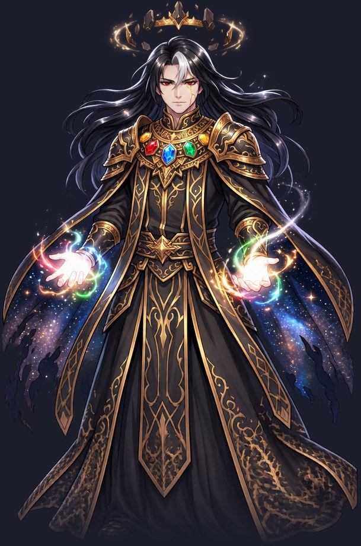
新版
- 外形
- 从少年改为外表约 22 岁的绝美青年王。黑长发，额前一缕白发，深红眼睛，脸上有一道发光的金色裂纹；破碎王冠光环，黑金初代王袍，衣领镶四色宝石，双手从指尖开始化成白光。
- 为何而战
- 四位初代王之一，从未睡去。他要亲手试一试你的魔法够不够撑起一个世界；不够，就让你回去再来。
- 和主角
- 一千年前，第一世的主角是他的学生。搓合四色的手法是他亲手教的，在咒需要新王时念出学生名字的也是他。一千年来他一直醒着，在等这个学生走回来。
- 技能
- 终焉之咒（致命魔法），战斗中有四色宝珠、王冠光环崩裂、双手化光
- 够不够强
- 他一个人撑起过碎裂的世界，是这个世界所有魔法的源头。
觉醒「来，让我看看——我教你的那双手，学会了什么。」
被击败「你比我教的，走得更远了。……源泉，交给你了。由你来选。」
配音与其他
- 巴尔德温：从老人声线换成低沉成熟的中年男声，9 句全部重配。我没法自己听，请你试听一下。
- 阿斯特里昂：原来的声线就是青年男中音，所以保留，只重配了改动过的台词。
- 薇丝塔：她对第 2、3、4、7、8 关人物的介绍按新关系改了 6 句，也重新配了音。
- 伊索尔德、菲奥娜、赛琳娜沿用原来的声线，只重配了改动的台词。总共新配 30 句，都用语音识别转回文字核对过。
- 典籍里这几位的残卷和心愿都已按新故事改写。